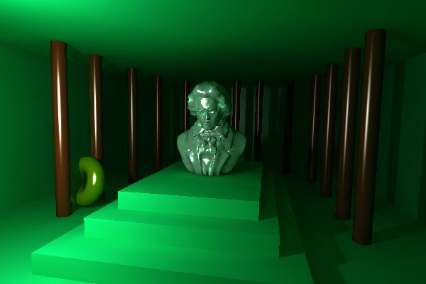

Main Page
Class Hierarchy Alphabetical
List Compound List
File List
Compound Members File Members
Stochastic Iteration method for Non-diffuse Global Illumination
Graphics Programming Methods
Stochastic Iteration for Non-diffuse Global Illumination
L. Szirmay-Kalos,
B. Benedek
2003.

This on-line documentation was extracted from the code related to the method Stochastic
Iteration method for Non-diffuse Global Illumination published in this
book, and is intented to help you browsing through the source. Check the links
at the top of this page for detailed information on Class Hierarchy, file or
compound members, etc.
Generated on Tue Feb 18 18:30:33 2003 for
Stochastic Iteration for Non-diffuse Global Illumination by
 1.3-rc2
1.3-rc2